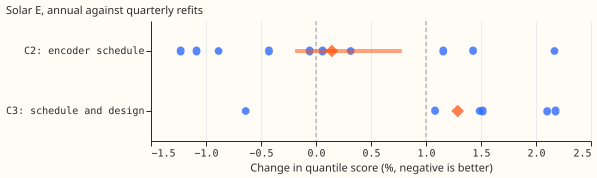
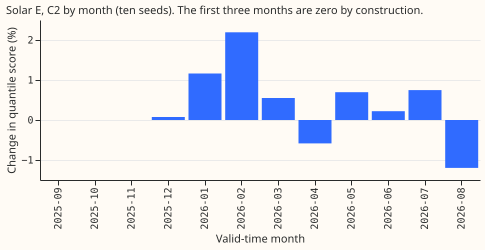
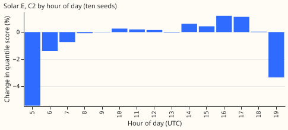
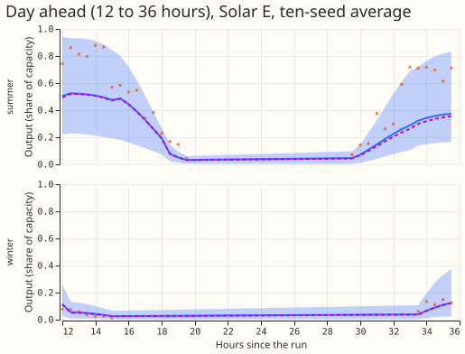
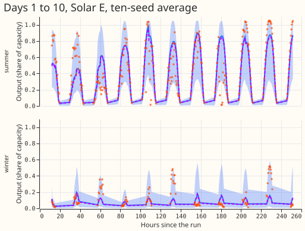

Is the loss from refitting the Solar E network once a year instead of every quarter larger than 1% once the network design is held fixed?
Refitting the neural network for Solar E (one of the six anonymised metered solar farms) once a year instead of every quarter raises its quantile score by about 0.3%, inside the 1% limit, so Solar E does not block annual refits. The quantile score is a pinball loss (the penalty for a quantile forecast that sits on the wrong side of the observed output) averaged over 11 quantile levels; lower is better. Experiment 493 reported that, at Solar E, the one-pass neural network (which reads the ensemble weather forecast's mean and spread) with annual refits scored 1.28% worse than the encoder (which reads all 51 ensemble members) with quarterly refits. The 1.28% figure compares two arms that differ in both network design and refit schedule. Holding the design fixed at the encoder, annual refits score +0.26% worse than quarterly refits at 10 random initialisations (seeds), with a 97.5% interval of −0.19% to +0.78% from resampling whole calendar months (a month-block bootstrap).
We first re-read the six seeds that experiment 493 stored, with no new fits. At six seeds the schedule-only contrast was +0.53% (+0.10% to +1.06%). The upper end exceeded 1%, and the seed spread of the contrast was too large to rule out a loss of 1% (a minimum detectable effect of 1.01%). We then fitted seeds 6 to 9 (16 fits, as the brief required in that case). The 10-seed contrast is +0.26% with a minimum detectable effect of 0.71%, so the 1% limit lies above it and the result is conclusive.

Figure 1. Change in quantile score at Solar E, annual against quarterly refits. Each dot is one seed, the diamonds are the mean of the per-seed contrasts, and the bar is the 97.5% month-block interval of the 10-seed average forecast for C2. The dashed lines mark 0 and the 1% limit. C3 has six seeds only.
Results
- C2, the schedule alone (encoder, annual against quarterly), Solar E. 10-seed average forecast: +0.265% over all bands (−0.190% to +0.780%) and +0.409% in the day-ahead band (+0.160% to +0.720%), month-block intervals at 97.5% (Bonferroni count 2, family level 5%, 12 valid-time months, 10,000 draws). Quarter-block intervals (4 blocks, at most 35 distinct resamples) are −0.18% to +0.99% and +0.09% to +0.71%. The all-bands upper end of +0.99% sits at the limit, so the verdict rests on the pre-registered month-block interval.
- Seed spread. The 10 per-seed contrasts run from −1.23% to +2.17% (mean +0.14%, standard deviation 1.14). The mean of the per-seed contrasts differs from the contrast of the average forecast (+0.26%) because averaging 10 forecasts lowers each arm's score by a different amount.
- Minimum detectable effect. Printed before any score: 1.96 × standard deviation ÷ √seeds, the half-width of a normal-approximation 95% interval for the mean per-seed contrast. The minimum detectable effect is 1.01% at six seeds and 0.71% at 10. At six seeds the 1% limit was below the minimum detectable effect, so the six-seed read was inconclusive; at 10 seeds the limit is above it. A t quantile instead of 1.96 would give about 1.32% at six seeds and 0.82% at 10.
- Absolute scores (points of capacity, 10 seeds, all bands, rows pooled). Annual 7.273, quarterly 7.257. The month-block contrasts above weight the 12 valid-time months equally; the per-seed contrasts and these scores pool rows (see the audit below).
- Six-seed per-seed mean of C2. +0.57% (range −1.23% to +2.17%), the figure that fell to +0.14% at 10 seeds.
- C3, the one-pass network with annual refits against the encoder with quarterly refits (six seeds). +1.28% (+0.52% to +1.96%), per-seed mean +1.29% with a range of −0.64% to +2.18%. The schedule contributes about 0.3% of it at 10 seeds, so the rest, about 1%, belongs to the network design. C3 has no 10-seed version because the one-pass network was not refitted.
- The loss is not one quarter. By refit quarter (10 seeds), annual against quarterly is 0.00% in the first quarter (same fit by construction), then +1.28%, +0.35%, and −0.37% in the second to fourth quarters. The per-seed standard deviation in each of those quarters is 1.9, 2.3, and 0.8 points, larger than the contrast in all three, so the brief's prediction that the contrast exceeds the seed spread in at least 2 of 4 quarters failed. Quarters are groups of forecast run dates, and no interval is shown because four blocks give too few resamples.
- By valid-time month. The contrast is positive in January (+1.2%) and February (+2.2%), near zero in March and May to July, and negative in April (−0.6%) and August (−1.2%). The contrast is zero by construction for September to November. See Figure 2.
- By hour of day. The loss sits in the daytime hours: 14:00 to 18:00 UTC hold 93% of the score difference, and the 05:00 to 08:00 UTC hours favour annual refits. See Figure 3.
- Not a clip effect. The 460 rows whose output is at least 98% of the year's 99.9th percentile carry −2.9% of the total score difference (annual is slightly better there). Output as a share of effective capacity rises from 0.43 (December) to 1.07 (April and May), a seasonal pattern; the scored year shows no capacity step. The 2021 to 2023 production level that experiment 453 found at other farms is outside the scored year, so this read could not test it.
- Control. In the first quarter the annual and quarterly forecasts are the same fit, and agree to below 1e-6 percent for all 10 seeds.

Figure 2. Change in quantile score by valid-time month (10-seed average forecast).

Figure 3. Change in quantile score by hour of day (10-seed average forecast).
Tails
| Arm | 0.01 pinball | 0.05 pinball | 0.95 pinball | 0.99 pinball | Coverage of 0.95 | Coverage of 0.99 |
|---|---|---|---|---|---|---|
| annual encoder | 0.460 | 1.800 | 1.395 | 0.323 | 0.9325 | 0.9821 |
| quarterly encoder | 0.457 | 1.785 | 1.384 | 0.321 | 0.9336 | 0.9836 |
Solar E, 10-seed average, points of capacity. The annual schedule is worse at every tail by 0.002 to 0.015 points. Both arms undercover the 0.95 and 0.99 quantiles by 0.8 to 1.8 percentage points.
Example forecasts

Figure 4. Solar E forecasts for the 12 to 36 hours after a run (15 June 2026 and 15 January 2026). The band is the 5% to 95% range of the annual encoder, the solid line its median, the dashed line the median of the quarterly encoder, and the dots the observed output.

Figure 5. The same two runs over days 1 to 10.
Serving table
| Stack | Networks per serving pass | Inputs | Refits per year | Score against quarterly encoder, Solar E |
|---|---|---|---|---|
| Encoder, quarterly | 1 network with the 51-member encoder | member-level and summary columns | 4 | 0 |
| Encoder, annual | 1 network with the 51-member encoder | member-level and summary columns | 1 | +0.26% |
Annual refits remove 3 of the 4 refits per year for the encoder (24 seconds of GPU time each, per seed). The serving pass is the same in both rows.
Checks
- Median minus mean forecast. +0.65 points of capacity for annual and +0.54 for quarterly refits (10 seeds, all rows).
- Mean-forecast error beside the contrast. The mean absolute error of the mean forecast is 14.050 for annual and 14.058 for quarterly refits, a difference of −0.06%. The quantile score favours quarterly refits by +0.26%, so audit trigger 3 fires, with a mean-forecast gap well inside seed noise.
- Other triggers. The control passed. The result did not contradict its prediction: the prediction stated a 10-seed spread of about 1 point, and the contrast moved from +0.5% to +0.26% inside it. The interval is as wide as experiment 493's for the same contrast (1.0 point wide there at six seeds, 0.97 points here at 10 seeds). Leave-one-farm-out does not apply to one farm.
Reviews
- Code review (fresh Sonnet). Redirects, row assembly, leakage cut-off, and bootstrap level were correct. Accepted: fixed the "six-seed" headings printed in 10-seed mode, grouped the quarter table by run date (the refit quarter) instead of valid time, and corrected the capacity heading. Accepted and stated above: the minimum detectable effect is a normal-approximation half-width, not a power-based figure.
- Audit (fresh Sonnet). It re-derived every headline number from the raw forecasts with its own code (10 seeds +0.265% and day-ahead +0.409%, six seeds +0.534%, per-seed contrasts, absolute scores), and found complete rows, no duplicate keys, a first quarter identical to the stored quarterly fit (largest quantile difference 2.6e-6), and no leakage in the cut-off. Accepted: the headline contrasts weight the 12 valid-time months equally, while the absolute scores and the per-seed contrasts pool rows (September 2025 holds 890 rows and May 2026 holds 8,310). Pooling rows gives +0.22% (−0.37% to +0.79%) over all bands and +0.54% (+0.27% to +0.78%) in the day-ahead band at 10 seeds, so the verdict stands; the day-ahead upper end stays below 1%. Accepted: the gap between +0.26% and the per-seed mean +0.14% is seed noise (standard error 0.36) plus an ensembling effect, not a fault. Accepted: the annual-minus-quarterly gap shrinks with horizon (row-pooled: day 1 +0.53%, days 6 to 7 +0.19%, days 8 to 10 −0.06%).
- Prose review (fresh Sonnet). Accepted: glossed Solar E, the one-pass network, the encoder, the quantile score, and the month-block interval in the opening; wrote "neural network"; replaced the money metaphor and the overreach to "all six farms"; corrected "almost entirely" to "mostly"; used numerals for 10 seeds; fixed the tail ranges (0.002 to 0.015 points; 0.8 to 1.8 percentage points); stated the six-seed per-seed mean; noted the +0.99% quarter-block upper end; removed the duplicate audit bullet and the empty problems heading. Rejected: re-deriving the "2 of 4 quarters" prediction into the front matter, because it came from the brief and the page now says so.
Caveats
- Seeds 6 to 9 were added after the six-seed read, as the brief specified for an ambiguous six-seed result. The six-seed and 10-seed numbers are both shown.
- One farm, one refit date, one scored year. Annual refits train to the end of August 2025. The scored year runs to August 2026, so it includes forecasts for July and August 2026, which the standing rule keeps unused. The rule was written after experiment 310 fixed these rows, and this experiment inherits its row set.
- Tails. The 0.95 and 0.99 quantiles undercover by 0.8 to 1.8 percentage points under both schedules.
- Not run: avoidable-curtailment cost and cold winter nights, which apply to demand. The stored lead band that starts at 12 hours is the day-ahead band; for solar the stored minimum lead is 12 hours in these forecast files.
- Seed noise. The month-block intervals treat the 10-seed average forecast as fixed, so they leave out seed-to-seed variation and understate the uncertainty; the per-seed spread above covers it.
Design
A fresh worktree needed uv sync --all-packages --group gpu for PyTorch, as CLAUDE.md says; the
move caused no other problem.
A fresh worktree needed uv sync --all-packages --group gpu for PyTorch, as CLAUDE.md says; the
move caused no other problem.
Code: ml-experiments/00498-solar-e-annual-refit-schedule-only-read/. The scripts import the
modules of experiments 310, 430, and 493 (ml-experiments/00310-metered-farm-long-lead-scoring/,
ml-experiments/00430-unified-forecaster-solar-and-pretraining-ablations/, and
ml-experiments/00493-solar-annual-against-quarterly-refits/). Fitted networks and predictions of
seeds 6 to 9 are in the private data folder
data/ml-experiments/00498-solar-e-annual-refit-schedule-only-read/.